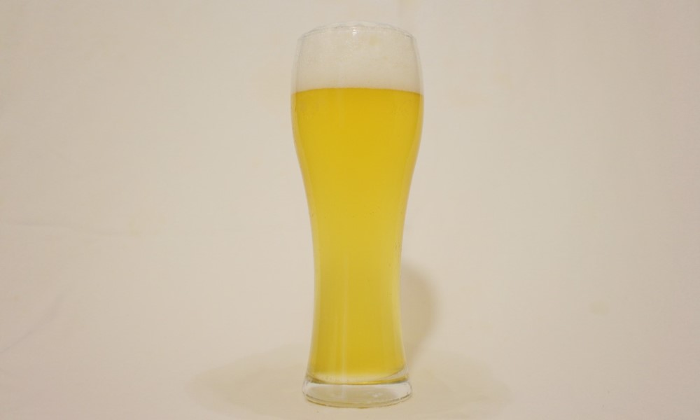
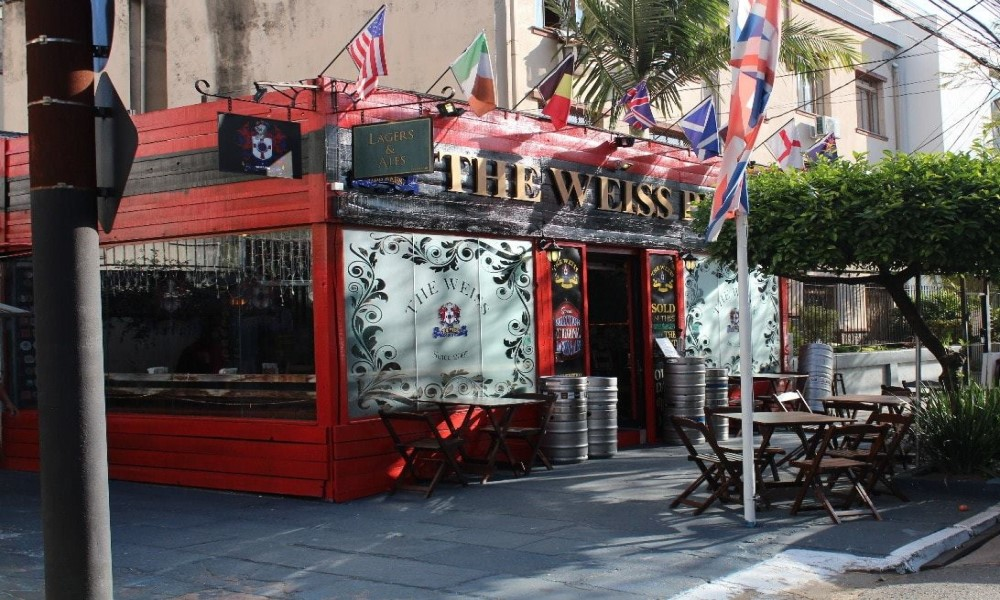

NACIONALIDADE // ALEMANHA
CARACTERÍSTICAS // Cor clara, turbidez e uma espuma cremosa.
HARMONIZAÇÃO // Culinárias chinesa e mexicana.
INGREDIENTES // Água, malte, trigo, lúpulo, cereais, extratos de laranja e coentro.
Descrição
As cervejas de trigo são produzidas com um percentual de malte de trigo, o que dá à bebida uma cor clara, turbidez e uma espuma cremosa. Essas características a tornam uma ótima escolha para refrescar o calor. Cervejas de trigo possuem um sabor leve e refrescante e um aroma que lembra pão, banana e cravo (provenientes da levedura), bem característico desse estilo. Geralmente é o primeiro passo para quem migra para o mundo artesanal.
Onde encontrar?

WEISS PUB 777
EndereçoRua Eudoro Berlink, 777
Auxiliadora, Porto Alegre - RS